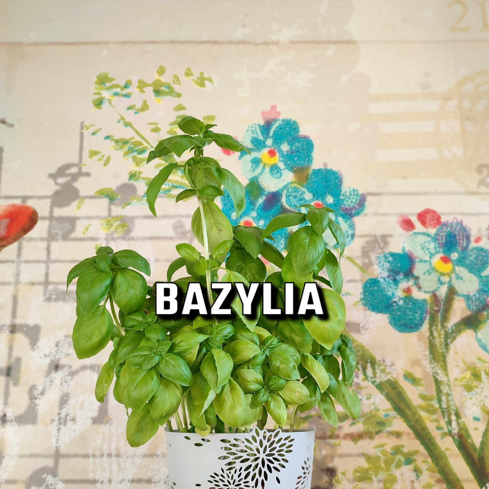

Stokrotki afrykańskie
💧💧💧 nawet co drugi dzień, w zależności od warunków atmosferycznych
☀️ pełne słońce
Stokrotki afrykańskie (Osteospermum) są roślinami, które preferują pełne nasłonecznienie i dobrze nawodnioną, stale wilgotną glebę. Oto kilka wskazówek dotyczących ich optymalnych warunków:
Stanowisko: Stokrotki afrykańskie najlepiej rosną na miejscu, gdzie otrzymują pełne nasłonecznienie przez większość dnia. Miejsce z bezpośrednim światłem słonecznym przez co najmniej 6-8 godzin będzie idealne dla ich wzrostu i kwitnienia.
Stokrotki afrykańskie potrzebują regularnego podlewania, aby utrzymać wilgotność gleby. W gorące, suche dni mogą wymagać częstszego podlewania. Warto sprawdzić wilgotność gleby przed podlaniem. Jeśli wierzchnia warstwa gleby jest sucha, podlej rośliny, aby nawodnić ich korzenie. Unikaj jednak zalewania i nadmiernego podlewania, ponieważ może to prowadzić do problemów z korzeniami.
Sprawdź wymagania pozostałych roslin:
